有趣的複變題
vu老師說，條件反射啦：\(\displaystyle \frac{1}{i}=-i\)
\([ICA-1.17]\) Show that the sum of the \(n\) n-th roots of every nonzero complex number \(w\) is zero. (The n nth roots of \(w\) are the roots of the equation \(z^n-w=0\).)
The sum of the roots of a polynomial equation \(z^n+a_{n-1}z^{n-1}+\cdots +a_0\) is \(-a_{n-1}\) (Proof), in \(z^n-w=0\), \(a_{n-1}=0\), therefore proved.
\([ICA-2.1]\) Show that Cauchy-Riemann equations can also be written as
\[ \frac{\partial u}{\partial x}=\frac{\partial v}{\partial y},\quad \frac{\partial u}{\partial y}=-\frac{\partial v}{\partial x} \Rightarrow \frac{\partial f}{\partial x}=-i\frac{\partial f}{\partial y} \]
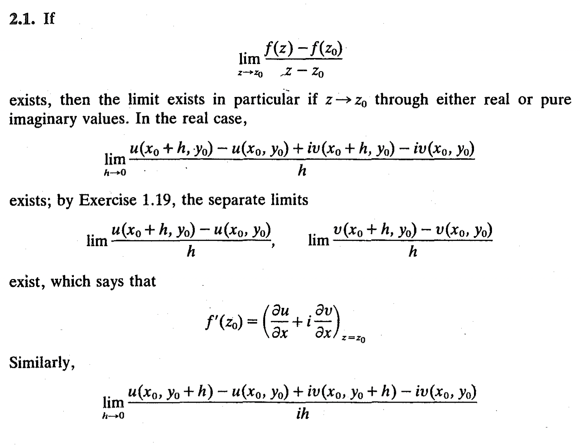
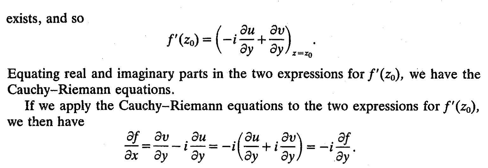
\([ICA-2.3]\) \(f(z)=u(x,y)+iv(x,y)\), show that if \(U(z_0,\delta)\in C^1\), and satisfies Cauchy-Riemann equation, then has derivatives at \(z_0\)
\[ \begin{aligned} f(z)-f(z_0)&=(x-x_0)u_1+(y-y_0)u_2+i[(x-x_0)v_1+(y-y_0)v_2]+o(z-z_0)\\ &=(x-x_0)(u_1-iu_2)+(y-y_0)(u_2+iu_1)+o(z-z_0)\\ &=(z-z_0)(u_1-iu_2)+o(z-z_0) \end{aligned} \]
\[ \Rightarrow f'(z_0)=\lim_{z\rightarrow z_0}\frac{f(z)-f(z_0)}{z-z_0}=u_1-iu_2\overset{also}{=}v_2+iv_1 \]
\([ICA-2.4]\)
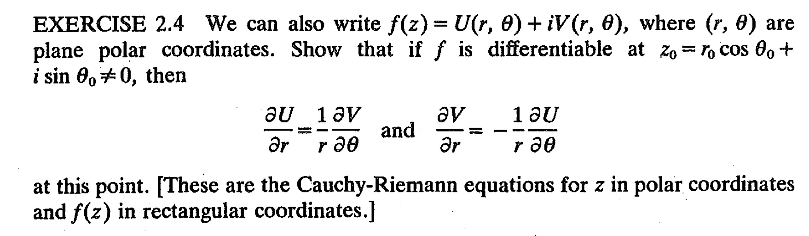
\[ \begin{aligned} &\frac{\partial f}{\partial r}=U_r+iV_r\\ &\frac{\partial f}{\partial r}=\frac{\partial f}{\partial z}\cdot \frac{\partial z}{\partial r}=f'(z)\cdot e^{i\theta} \end{aligned} \]
\[ \begin{aligned} &\frac{\partial f}{\partial \theta}=U_{\theta}+iV_{\theta}\\ &\frac{\partial f}{\partial \theta}=\frac{\partial f}{\partial z}\cdot \frac{\partial z}{\partial \theta}=f'(z)\cdot ire^{i\theta} \end{aligned} \]
\[ \Rightarrow U_r+iV_r=\frac{1}{ir}(U_{\theta}+iV_{\theta}) \]
整理後，記得\(\Re=\Re,\Im=\Im\)
\([ICA-2.5]\)
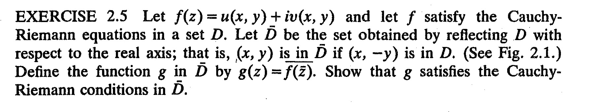
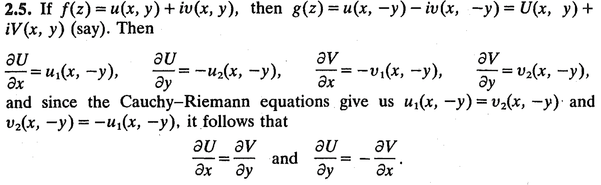
note: \(z=(x,y)\in \bar{D}\), therefore \((x,-y)\in D\) satisfies Cauchy-Riemann as given
\([ICA-2.6]\)
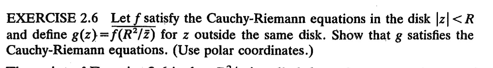
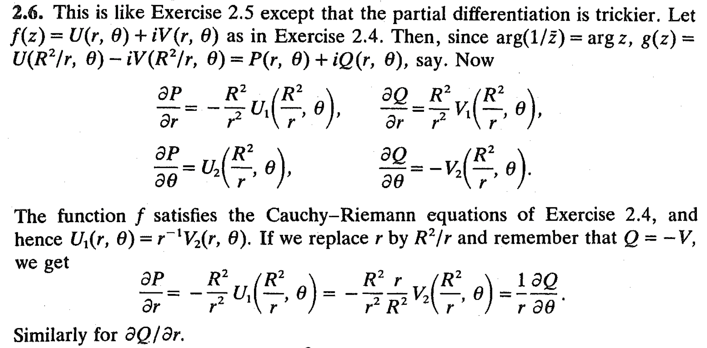
note: replace \(r\rightarrow R^2/r\)
\[ U_1(\frac{R^2}{r},\theta)=\frac{r}{R^2}V_2(\frac{R^2}{r},\theta) \]
\([ICA-2.8,2.9]\)
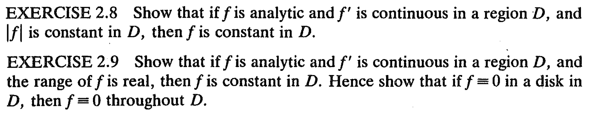
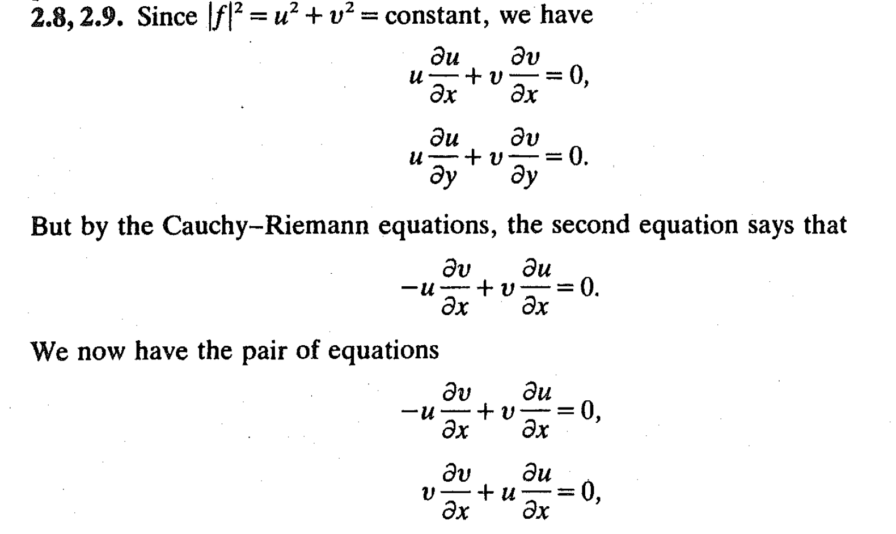
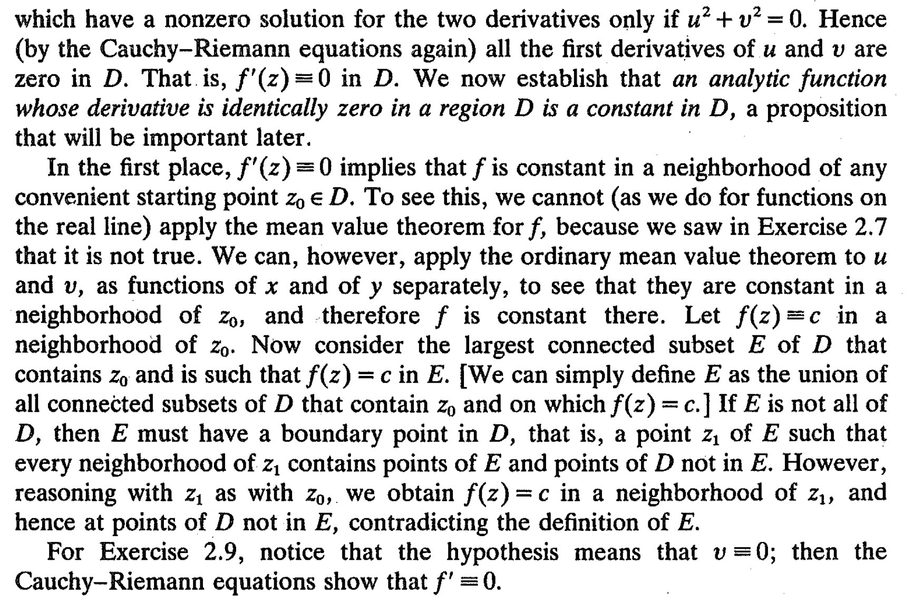

\([ICA-3.9]\) Prove: for \(\displaystyle \sum_{k=0}^{\infty}a_k(z-z_0)^k\), the formula of radius of convergence \(R\) is
\[ \frac{1}{R}=\limsup_{n\rightarrow \infty}|a_n|^{\frac{1}{n}} \]
pf. 思路：湊\(|a_nz^n|\)，跟1比較
- \(0<R<\infty\)
By \(\displaystyle \frac{1}{R}=\limsup_{n\rightarrow \infty}|a_n|^{\frac{1}{n}}\)
For all \(n\) large enough
\[ |a_n|^{\frac{1}{n}}<\frac{1}{R}+\varepsilon =\frac{1}{R-\varepsilon} \]
\[ |a_n|<\frac{1}{(R-\varepsilon)^n} \]
For \(z<R\), therefore \(z<R-\varepsilon\)
\[ |a_nz^n|<(\frac{z}{R-\varepsilon})^n<1 \ \square \]
For infinite \(n\)
\[ |a_n|^{\frac{1}{n}}>\frac{1}{R}-\varepsilon=\frac{1}{R+\varepsilon} \]
\[ |a_n|>\frac{1}{R+\varepsilon}^n \]
For \(|z|>R\), also \(|z|>R+\varepsilon\)
\[ |a_nz^n|>(\frac{z}{R+\varepsilon})^n>1 \ \square \]
- \(R=0\)
\(\Rightarrow \frac{1}{R}=\infty\)
\[ |a_n|^{\frac{1}{n}}>K,\ \forall K \]
choose
\[ |z|>\frac{1}{K} \]
In order to let
\[ |a_nz^n|>(Kz)^n>1 \ \square \]
- \(R=\infty\)
\(\Rightarrow \frac{1}{R}=0\)
\[ \therefore |a_n|^{\frac{1}{n}}<\varepsilon \Rightarrow |a_n|<\varepsilon^n \]
choose
\[ z<\frac{1}{\varepsilon} \]
Inorder to let
\[ |a_nz^n|<(z\varepsilon)^n<1 \ \square \]
\([ICA-3.10(c)]\) Find convergence \(R\) for
\[ 1+3z+2z^2+9z^3+\cdots+2^nz^{2n}+3^{n+1}z^{2n+1}+\cdots \]
the formula for \(1/R\) yields \(R = 3^{-1/2}\) (the terms of even index don't have any influence), why?
\([ICA-3.11]\) Let \(\sum_{k=0}^{\infty}a_kz^k\) have radius of convergence \(R\) and let \(m\) be a positive integer. Show that series
\[ \sum_{k=0}^{\infty}k^ma_kz^k \]
and
\[ \sum_{k=0}^{\infty}k(k-1)\cdots(k-m) a_kz^k \]
both have radius of convergence \(R\)
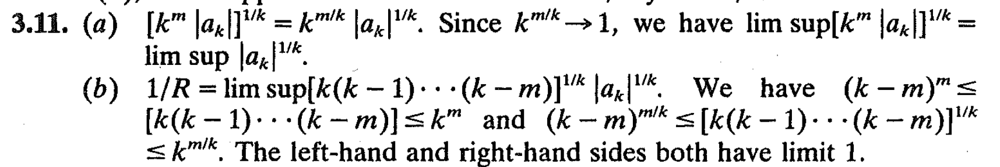
Note: (2)不能用comparison test，因為是要求R，而不是判斷是否收斂，條件更嚴格。從(2)也能得到結論：對一個power series無論求導多少次，也有相同的radius of convergence